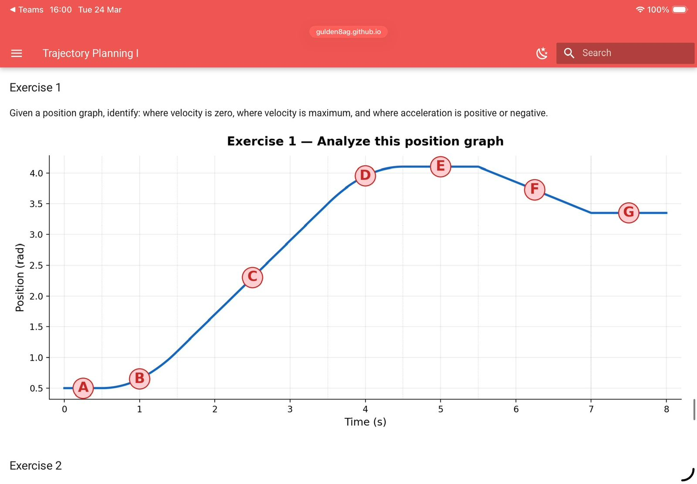
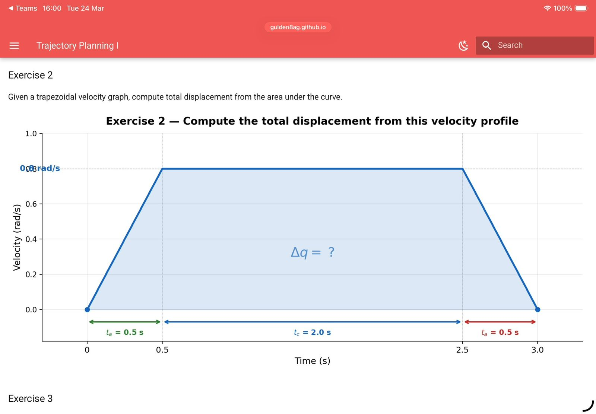
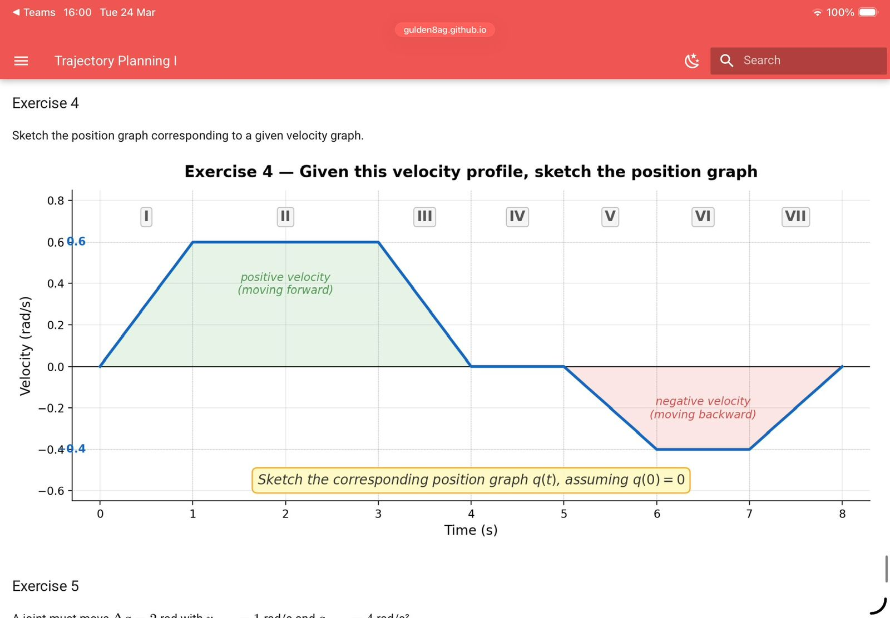
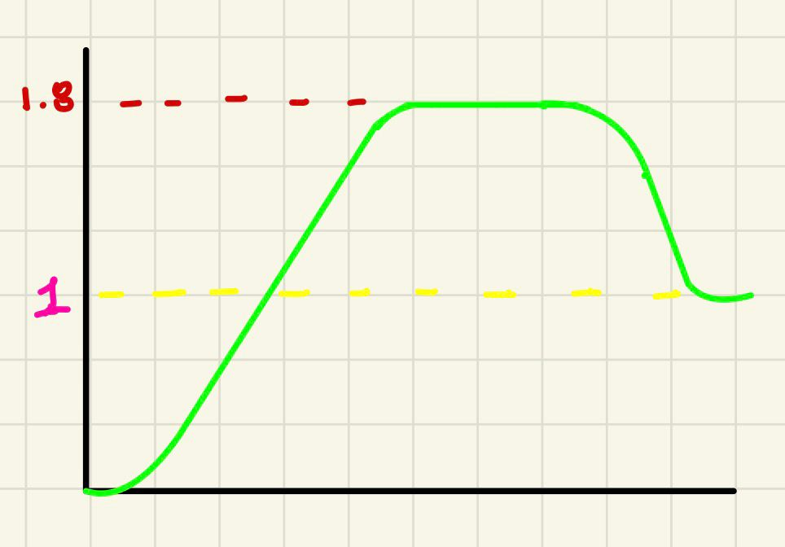

Trajectory Planning I
This page documents the exercises on joint trajectory planning, covering position/velocity/acceleration graph analysis, trapezoidal and triangular velocity profiles, and the derivation of motion functions.
Exercise 1 — Analyze a Position Graph
Task: Given a position graph, identify: where velocity is zero, where velocity is maximum, and where acceleration is positive or negative.

Analysis of Labeled Points
| Point | Time (s) | Observation |
|---|---|---|
| A | ~0.2 | Velocity ≈ 0 (flat segment begins) |
| B | ~1.0 | Velocity ≈ 0 (end of flat, inflection ahead) |
| C | ~2.5 | Velocity increasing (steep slope, approaching max) |
| D | ~4.0 | Velocity ≈ max (steepest slope on curve) |
| E | ~5.0 | Velocity ≈ 0 (local maximum, curve flattens) |
| F | ~6.2 | Velocity negative / decelerating |
| G | ~7.5 | Velocity ≈ 0 (curve flattens again) |
Key Conclusions
- Velocity = 0 at points A–B (flat region) and at E and G (local extrema).
- Velocity is maximum near point D, where the slope of the position curve is steepest.
- Acceleration > 0 (concave up) between B and D — the curve bends upward.
- Acceleration < 0 (concave down) between D and F — the curve bends downward.
- Acceleration ≈ 0 at inflection points (D and the transitions between concave regions).
Exercise 2 — Compute Total Displacement from a Velocity Profile
Task: Given a trapezoidal velocity graph, compute total displacement Δq from the area under the curve.

Given Values
| Parameter | Value |
|---|---|
| v_max | 0.8 rad/s |
| t_a (acceleration phase) | 0.5 s |
| t_c (constant phase) | 2.0 s |
| t_a (deceleration phase) | 0.5 s |
| Total time T | 3.0 s |
Solution
The displacement equals the area of the trapezoid:
Δq = ½ · v_max · t_a + v_max · t_c + ½ · v_max · t_a
Δq = ½ · (0.8)(0.5) + (0.8)(2.0) + ½ · (0.8)(0.5)
Δq = 0.2 + 1.6 + 0.2
Δq = 2.0 rad
Or equivalently using the trapezoid area formula:
Δq = v_max · (t_c + t_a) = 0.8 · (2.0 + 0.5) = 2.0 rad
Result: Δq = 2.0 rad
Exercise 3 — Trapezoidal or Triangular Profile?
Task: Given Δq, v_max, and a_max, determine whether the motion is trapezoidal or triangular.
Method
Compute the minimum displacement required to reach v_max:
Δq_min = v_max² / a_max
- If Δq ≥ Δq_min → Trapezoidal (the profile reaches v_max)
- If Δq < Δq_min → Triangular (v_max is never reached)
Case a) Δq = 5 rad, v_max = 2 rad/s, a_max = 4 rad/s²
Δq_min = (2)² / 4 = 4 / 4 = 1.0 rad
Δq = 5 rad ≥ Δq_min = 1.0 rad
→ Trapezoidal profile
Case b) Δq = 0.4 rad, v_max = 2 rad/s, a_max = 4 rad/s²
Δq_min = (2)² / 4 = 1.0 rad
Δq = 0.4 rad < Δq_min = 1.0 rad
→ Triangular profile (the joint cannot reach v_max in the available displacement)
Exercise 4 — Sketch the Position Graph from a Velocity Profile
Task: Given the velocity profile below, sketch the position graph q(t), assuming q(0) = 0.

Velocity Segments
| Phase | Time Interval | Velocity Behavior |
|---|---|---|
| I | 0 – 1 s | Ramp up: 0 → 0.6 rad/s |
| II | 1 – 3 s | Constant: 0.6 rad/s |
| III | 3 – 4 s | Ramp down: 0.6 → 0 rad/s |
| IV | 4 – 5 s | Zero velocity |
| V | 5 – 6 s | Ramp down: 0 → −0.4 rad/s |
| VI | 6 – 7 s | Constant: −0.4 rad/s |
| VII | 7 – 8 s | Ramp up: −0.4 → 0 rad/s |
Position q(t) by Integration
Phase I (0–1s): q(t) = ½ · 0.6 · t² → q(1) = 0.3 rad
Phase II (1–3s): q(t) = 0.3 + 0.6·(t−1) → q(3) = 0.3 + 1.2 = 1.5 rad
Phase III (3–4s): q(t) = 1.5 + 0.6·(t−3) − ½·0.6·(t−3)² → q(4) = 1.5 + 0.3 = 1.8 rad
Phase IV (4–5s): q(t) = 1.8 (constant)
Phase V (5–6s): q(t) = 1.8 − ½·0.4·(t−5)² → q(6) = 1.8 − 0.2 = 1.6 rad
Phase VI (6–7s): q(t) = 1.6 − 0.4·(t−6) → q(7) = 1.6 − 0.4 = 1.2 rad
Phase VII (7–8s): q(t) = 1.2 − 0.4·(t−7) + ½·0.4·(t−7)² → q(8) = 1.2 − 0.2 = 1.0 rad
Shape of the Position Graph

Exercise 5 — Full Trapezoidal Profile Design
Given: Δq = 2 rad, v_max = 1 rad/s, a_max = 4 rad/s²
a) Trapezoidal or Triangular?
Δq_min = v_max² / a_max = (1)² / 4 = 0.25 rad
Δq = 2 rad ≥ 0.25 rad
→ Trapezoidal profile
b) Compute t_a, t_c, and T
t_a = v_max / a_max = 1 / 4 = 0.25 s
t_c = (Δq − v_max · t_a) / v_max = (2 − 1 · 0.25) / 1 = 1.75 s
T = 2·t_a + t_c = 2·(0.25) + 1.75 = 2.25 s
c) Velocity Function q̇(t) per Phase
Acceleration phase (0 ≤ t ≤ t_a): q̇(t) = a_max · t = 4t
Constant phase (t_a ≤ t ≤ t_a + t_c): q̇(t) = v_max = 1 rad/s
Deceleration phase (t_a + t_c ≤ t ≤ T): q̇(t) = v_max − a_max · (t − (t_a + t_c)) = 1 − 4·(t − 2.0)
d) Position Function q(t) per Phase (q₀ = 0)
Acceleration phase (0 ≤ t ≤ 0.25): q(t) = ½ · a_max · t² = 2t²
Constant phase (0.25 ≤ t ≤ 2.0): q(t) = q(t_a) + v_max·(t − t_a) = 0.03125 + 1·(t − 0.25)
Deceleration phase (2.0 ≤ t ≤ 2.25): q(t) = q(t_a + t_c) + v_max·(t−2.0) − ½·a_max·(t−2.0)² = 1.78125 + (t−2.0) − 2·(t−2.0)²
Exercise 6 — Profile Design for Fixed Total Time
Given: Δq = 3 rad, T = 3 s
a) Triangular Profile
For a triangular profile, the motion accelerates to a peak velocity v_p then immediately decelerates:
T = 2 · t_a → t_a = T/2 = 1.5 s
Δq = ½ · v_p · T v_p = 2·Δq / T = 2·3 / 3 = 2 rad/s
a = v_p / t_a = 2 / 1.5 = 4/3 ≈ 1.333 rad/s²
Triangular: v_p = 2 rad/s, a = 1.333 rad/s²
b) Trapezoidal Profile (t_a = 0.5 s)
t_c = T − 2·t_a = 3 − 2·(0.5) = 2.0 s
Δq = v_max·(t_c + t_a) v_max = Δq / (t_c + t_a) = 3 / (2.0 + 0.5) = 1.2 rad/s
a_max = v_max / t_a = 1.2 / 0.5 = 2.4 rad/s²
Trapezoidal: v_max = 1.2 rad/s, a_max = 2.4 rad/s²
c) Comparison
| Profile | Peak Velocity | Peak Acceleration |
|---|---|---|
| Triangular | 2.0 rad/s | 1.333 rad/s² |
| Trapezoidal | 1.2 rad/s | 2.4 rad/s² |
The triangular profile is gentler on the motor because it requires a lower peak acceleration (1.333 vs 2.4 rad/s²). Lower acceleration means lower peak torque demand, reducing mechanical stress and wear on the actuator.